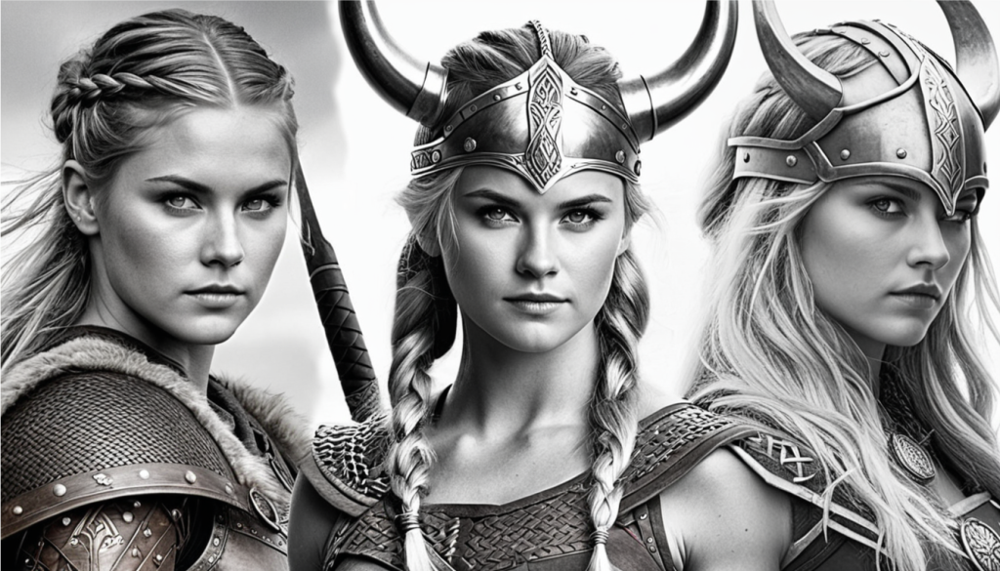

Kadın Viking Savaşçıları
Vikingler, genellikle güçlü ve korkusuz erkek savaşçılar olarak tasvir edilir. Ancak son yıllarda yapılan arkeolojik bulgular ve araştırmalar, kadınların da Viking savaşçıları arasında yer aldığını ortaya koymuştur. Bu keşif, Viking kültürü ve toplumu hakkında bildiklerimizi kökten değiştirerek, kadınların savaş meydanlarında da önemli roller oynadığını göstermektedir.

2017 yılında İsveç’in Birka kasabasında yapılan kazılarda, bir kadın Viking savaşçısına ait mezar bulundu. Bu mezarda, savaş ekipmanları ve silahlarla birlikte gömülmüş olan kadının, yüksek rütbeli bir savaşçı olduğu anlaşıldı. DNA analizleri, mezarın sahibinin biyolojik olarak kadın olduğunu kesinleştirdi. Bu bulgu, Viking kadınlarının savaşçı olabileceği yönündeki tartışmaları yeniden alevlendirdi ve tarih kitaplarında yer alan geleneksel Viking imgesini sorgulattı.
Viking kültüründe kadınlar, günlük yaşamda ve toplumsal yapıda önemli bir yere sahipti. Kadınlar ev işlerinin yanı sıra ticaretle uğraşır, çiftçilik yapar ve topluluk içinde saygı görürdü. Ancak savaşçı kadınların varlığı, bu rollerin ötesine geçen bir durumu işaret etmektedir. Viking mitolojisinde ve destanlarında da güçlü kadın figürlerine rastlanır. Örneğin, Valkürler, savaş alanında ölen kahramanları Valhalla’ya götüren güçlü savaşçı kadınlar olarak tasvir edilir. Bu mitolojik figürler, gerçek hayattaki kadın savaşçıların bir yansıması olabilir.
İskandinav sagaları ve diğer tarihi kaynaklar, kadın savaşçılara dair ipuçları sunar. Bu kaynaklarda, “skjaldmö” olarak adlandırılan kalkan kızları, savaş meydanlarında erkeklerle omuz omuza savaşan kadınlar olarak betimlenir. Örneğin, ünlü Viking destanı “Hervarar Saga”da, Hervor adında bir kadın savaşçının hikayesi anlatılır. Bu hikaye ve diğer benzer anlatılar, kadın savaşçıların Viking toplumunda hem mitolojik hem de gerçek bir karşılığı olduğunu düşündürmektedir.
Modern arkeolojik ve antropolojik araştırmalar, Viking kadın savaşçılarının varlığını daha da pekiştirmektedir. Mezarlarda bulunan silahlar ve savaş ekipmanları, kadınların sadece savaşçı değil, aynı zamanda stratejik liderler olabileceğini de göstermektedir. Ayrıca, kadınların mezarlarına erkek savaşçılarla aynı şekilde saygı gösterilmesi, toplumsal cinsiyet rollerinin Viking toplumunda daha esnek olabileceğini ortaya koymaktadır. Kadın Viking savaşçılarının keşfi, sadece tarihsel bir bulgu olmanın ötesinde, toplumsal cinsiyet rolleri ve kadınların tarih içindeki yeri hakkında önemli bir perspektif sunmaktadır. Bu bulgular, tarih boyunca kadınların sadece ev işleri ve çocuk bakımıyla sınırlı olmadığını, aynı zamanda savaş meydanlarında da önemli roller üstlendiklerini göstermektedir. Viking kadınları, cesaretleri ve yetenekleriyle toplumsal normları aşarak, savaşçı kimliklerini ortaya koymuşlardır.
Kadın Viking savaşçıları, tarihin gizli kalmış kahramanları olarak yeniden keşfedilmekte ve tanınmaktadır. Arkeolojik bulgular ve tarihi kaynaklar, Viking kadınlarının savaş meydanlarında da erkeklerle eşit derecede yer aldığını ortaya koyarak, toplumsal cinsiyet rollerine dair kalıplaşmış düşünceleri yıkmaktadır. Bu keşifler, sadece Viking tarihini değil, aynı zamanda kadınların tarih boyunca üstlendiği rollerin anlaşılmasını da derinleştirmektedir. Kadın Viking savaşçıları, cesaret ve kararlılıkla tarihe meydan okuyan figürler olarak, günümüz kadınlarına da ilham vermeye devam etmektedir.